# 设计模式
在软件工程中，设计模式（Design Pattern）是对软件设计中普遍存在（反复出现）的各种问题，所提出的解决方案。根据模式的目的来划分的话，GoF（Gang of Four）设计模式可以分为以下 3 种类型：
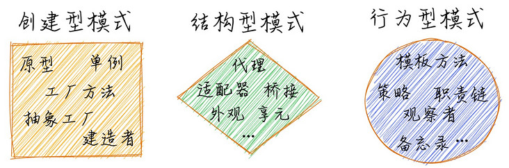
1、创建型模式：用来描述 “如何创建对象”，它的主要特点是 “将对象的创建和使用分离”。包括单例、原型、工厂方法、抽象工厂和建造者 5 种模式。
2、结构型模式：用来描述如何将类或对象按照某种布局组成更大的结构。包括代理、适配器、桥接、装饰、外观、享元和组合 7 种模式。
3、行为型模式：用来识别对象之间的常用交流模式以及如何分配职责。包括模板方法、策略、命令、职责链、状态、观察者、中介者、迭代器、访问者、备忘录和解释器 11 种模式。
接下来阿宝哥将结合一些生活中的场景并通过精美的配图，来向大家介绍 9 种常用的设计模式。
# 一、建造者模式
建造者模式（Builder Pattern）将一个复杂对象分解成多个相对简单的部分，然后根据不同需要分别创建它们，最后构建成该复杂对象。
一辆小汽车 🚗 通常由 发动机、底盘、车身和电气设备 四大部分组成。汽车电气设备的内部构造很复杂，简单起见，我们只考虑三个部分：引擎、底盘和车身。
在现实生活中，小汽车也是由不同的零部件组装而成，比如上图中我们把小汽车分成引擎、底盘和车身三大部分。下面我们来看一下如何使用建造者模式来造车子。
# 1.1 实现代码
class Car { | |
constructor( | |
public engine: string, | |
public chassis: string, | |
public body: string | |
) {} | |
} | |
class CarBuilder { | |
engine!: string; // 引擎 | |
chassis!: string; // 底盘 | |
body!: string; // 车身 | |
addChassis(chassis: string) { | |
this.chassis = chassis; | |
return this; | |
} | |
addEngine(engine: string) { | |
this.engine = engine; | |
return this; | |
} | |
addBody(body: string) { | |
this.body = body; | |
return this; | |
} | |
build() { | |
return new Car(this.engine, this.chassis, this.body); | |
} | |
} |
在以上代码中，我们定义一个 CarBuilder 类，并提供了 addChassis 、 addEngine 和 addBody 3 个方法用于组装车子的不同部位，当车子的 3 个部分都组装完成后，调用 build 方法就可以开始造车。
# 1.2 使用示例
const car = new CarBuilder() | |
.addEngine('v12') | |
.addBody('镁合金') | |
.addChassis('复合材料') | |
.build(); |
# 1.3 应用场景及案例
- 需要生成的产品对象有复杂的内部结构，这些产品对象通常包含多个成员属性。
- 需要生成的产品对象的属性相互依赖，需要指定其生成顺序。
- 隔离复杂对象的创建和使用，并使得相同的创建过程可以创建不同的产品。
- Github - node-sql-query：https://github.com/dresende/n...
# 二、工厂模式
在现实生活中，工厂是负责生产产品的，比如牛奶、面包或礼物等，这些产品满足了我们日常的生理需求。
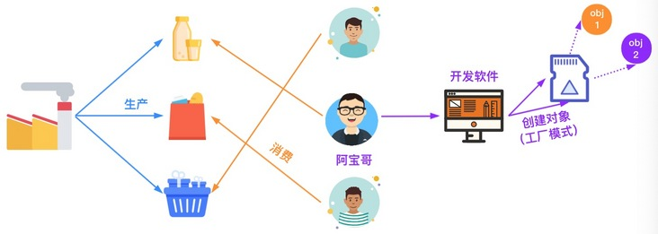
在众多设计模式当中，有一种被称为工厂模式的设计模式，它提供了创建对象的最佳方式。工厂模式可以分为：简单工厂模式、工厂方法模式和抽象工厂模式。
# 2.1 简单工厂
简单工厂模式又叫 静态方法模式，因为工厂类中定义了一个静态方法用于创建对象。简单工厂让使用者不用知道具体的参数就可以创建出所需的 ” 产品 “ 类，即使用者可以直接消费产品而不需要知道产品的具体生产细节。
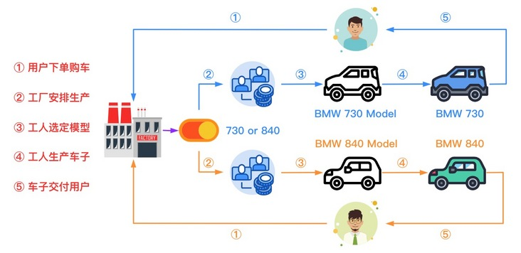
在上图中，阿宝哥模拟了用户购车的流程，小王和小秦分别向 BMW 工厂订购了 BMW730 和 BMW840 型号的车型，接着工厂会先判断用户选择的车型，然后按照对应的模型进行生产并在生产完成后交付给用户。
下面我们来看一下如何使用简单工厂来描述 BMW 工厂生产指定型号车子的过程。
# 2.1.1 实现代码
abstract class BMW { | |
abstract run(): void; | |
} | |
class BMW730 extends BMW { | |
run(): void { | |
console.log("BMW730 发动咯"); | |
} | |
} | |
class BMW840 extends BMW { | |
run(): void { | |
console.log("BMW840 发动咯"); | |
} | |
} | |
class BMWFactory { | |
public static produceBMW(model: "730" | "840"): BMW { | |
if (model === "730") { | |
return new BMW730(); | |
} else { | |
return new BMW840(); | |
} | |
} | |
} |
在以上代码中，我们定义一个 BMWFactory 类，该类提供了一个静态的 produceBMW() 方法，用于根据不同的模型参数来创建不同型号的车子。
# 2.1.2 使用示例
const bmw730 = BMWFactory.produceBMW("730"); | |
const bmw840 = BMWFactory.produceBMW("840"); | |
bmw730.run(); | |
bmw840.run(); |
# 2.1.3 应用场景
- 工厂类负责创建的对象比较少：由于创建的对象比较少，不会造成工厂方法中业务逻辑过于复杂。
- 客户端只需知道传入工厂类静态方法的参数，而不需要关心创建对象的细节。
# 2.2 工厂方法
工厂方法模式（Factory Method Pattern）又称为工厂模式，也叫多态工厂（Polymorphic Factory）模式，它属于类创建型模式。
在工厂方法模式中，工厂父类负责定义创建产品对象的公共接口，而工厂子类则负责生成具体的产品对象， 这样做的目的是将产品类的实例化操作延迟到工厂子类中完成，即通过工厂子类来确定究竟应该实例化哪一个具体产品类。
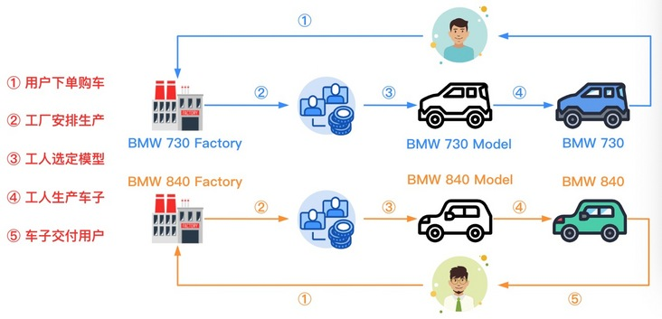
在上图中，阿宝哥模拟了用户购车的流程，小王和小秦分别向 BMW 730 和 BMW 840 工厂订购了 BMW730 和 BMW840 型号的车子，接着工厂按照对应的模型进行生产并在生产完成后交付给用户。
同样，我们来看一下如何使用工厂方法来描述 BMW 工厂生产指定型号车子的过程。
# 2.2.1 实现代码
abstract class BMWFactory { | |
abstract produceBMW(): BMW; | |
} | |
class BMW730Factory extends BMWFactory { | |
produceBMW(): BMW { | |
return new BMW730(); | |
} | |
} | |
class BMW840Factory extends BMWFactory { | |
produceBMW(): BMW { | |
return new BMW840(); | |
} | |
} |
在以上代码中，我们分别创建了 BMW730Factory 和 BMW840Factory 两个工厂类，然后使用这两个类的实例来生产不同型号的车子。
# 2.2.2 使用示例
const bmw730Factory = new BMW730Factory(); | |
const bmw840Factory = new BMW840Factory(); | |
const bmw730 = bmw730Factory.produceBMW(); | |
const bmw840 = bmw840Factory.produceBMW(); | |
bmw730.run(); | |
bmw840.run(); |
# 2.2.3 应用场景
- 一个类不知道它所需要的对象的类：在工厂方法模式中，客户端不需要知道具体产品类的类名，只需要知道所对应的工厂即可，具体的产品对象由具体工厂类创建；客户端需要知道创建具体产品的工厂类。
- 一个类通过其子类来指定创建哪个对象：在工厂方法模式中，对于抽象工厂类只需要提供一个创建产品的接口，而由其子类来确定具体要创建的对象，利用面向对象的多态性和里氏代换原则，在程序运行时，子类对象将覆盖父类对象，从而使得系统更容易扩展。
继续阅读：Typescript 设计模式之工厂方法
# 2.3 抽象工厂
抽象工厂模式（Abstract Factory Pattern），提供一个创建一系列相关或相互依赖对象的接口，而无须指定它们具体的类。
在工厂方法模式中具体工厂负责生产具体的产品，每一个具体工厂对应一种具体产品，工厂方法也具有唯一性，一般情况下，一个具体工厂中只有一个工厂方法或者一组重载的工厂方法。 但是有时候我们需要一个工厂可以提供多个产品对象，而不是单一的产品对象。
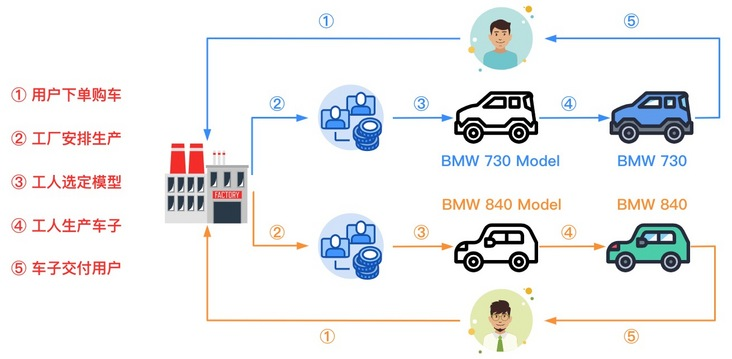
在上图中，阿宝哥模拟了用户购车的流程，小王向 BMW 工厂订购了 BMW730，工厂按照 730 对应的模型进行生产并在生产完成后交付给小王。而小秦向同一个 BMW 工厂订购了 BMW840，工厂按照 840 对应的模型进行生产并在生产完成后交付给小秦。
下面我们来看一下如何使用抽象工厂来描述上述的购车过程。
# 2.3.1 实现代码
abstract class BMWFactory { | |
abstract produce730BMW(): BMW730; | |
abstract produce840BMW(): BMW840; | |
} | |
class ConcreteBMWFactory extends BMWFactory { | |
produce730BMW(): BMW730 { | |
return new BMW730(); | |
} | |
produce840BMW(): BMW840 { | |
return new BMW840(); | |
} | |
} |
# 2.3.2 使用示例
const bmwFactory = new ConcreteBMWFactory(); | |
const bmw730 = bmwFactory.produce730BMW(); | |
const bmw840 = bmwFactory.produce840BMW(); | |
bmw730.run(); | |
bmw840.run(); |
# 2.3.3 应用场景
- 一个系统不应当依赖于产品类实例如何被创建、组合和表达的细节，这对于所有类型的工厂模式都是重要的。
- 系统中有多于一个的产品族，而每次只使用其中某一产品族。
- 系统提供一个产品类的库，所有的产品以同样的接口出现，从而使客户端不依赖于具体实现。
继续阅读：创建对象的最佳方式是什么？
# 三、单例模式
单例模式（Singleton Pattern）是一种常用的模式，有一些对象我们往往只需要一个，比如全局缓存、浏览器中的 window 对象等。单例模式用于保证一个类仅有一个实例，并提供一个访问它的全局访问点。
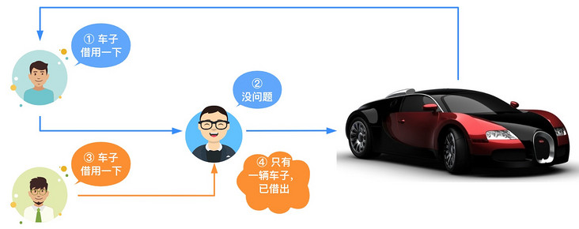
在上图中，阿宝哥模拟了借车的流程，小王临时有急事找阿宝哥借车子，阿宝哥家的车子刚好没用，就借给小王了。当天，小秦也需要用车子，也找阿宝哥借车，因为阿宝哥家里只有一辆车子，所以就没有车可借了。
对于车子来说，它虽然给生活带来了很大的便利，但养车也需要一笔不小的费用（车位费、油费和保养费等），所以阿宝哥家里只有一辆车子。在开发软件系统时，如果遇到创建对象时耗时过多或耗资源过多，但又经常用到的对象，我们就可以考虑使用单例模式。
下面我们来看一下如何使用 TypeScript 来实现单例模式。
# 3.1 实现代码
class Singleton { | |
// 定义私有的静态属性，来保存对象实例 | |
private static singleton: Singleton; | |
private constructor() {} | |
// 提供一个静态的方法来获取对象实例 | |
public static getInstance(): Singleton { | |
if (!Singleton.singleton) { | |
Singleton.singleton = new Singleton(); | |
} | |
return Singleton.singleton; | |
} | |
} |
# 3.2 使用示例
let instance1 = Singleton.getInstance(); | |
let instance2 = Singleton.getInstance(); | |
console.log(instance1 === instance2); // true |
# 3.3 应用场景
- 需要频繁实例化然后销毁的对象。
- 创建对象时耗时过多或耗资源过多，但又经常用到的对象。
- 系统只需要一个实例对象，如系统要求提供一个唯一的序列号生成器或资源管理器，或者需要考虑资源消耗太大而只允许创建一个对象。
继续阅读：TypeScript 设计模式之单例模式
# 四、适配器模式
在实际生活中，也存在适配器的使用场景，比如：港式插头转换器、电源适配器和 USB 转接口。而在软件工程中，适配器模式的作用是解决两个软件实体间的接口不兼容的问题。 使用适配器模式之后，原本由于接口不兼容而不能工作的两个软件实体就可以一起工作。
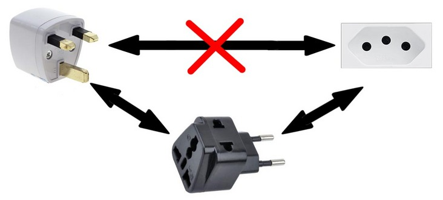
# 4.1 实现代码
interface Logger { | |
info(message: string): Promise<void>; | |
} | |
interface CloudLogger { | |
sendToServer(message: string, type: string): Promise<void>; | |
} | |
class AliLogger implements CloudLogger { | |
public async sendToServer(message: string, type: string): Promise<void> { | |
console.info(message); | |
console.info('This Message was saved with AliLogger'); | |
} | |
} | |
class CloudLoggerAdapter implements Logger { | |
protected cloudLogger: CloudLogger; | |
constructor (cloudLogger: CloudLogger) { | |
this.cloudLogger = cloudLogger; | |
} | |
public async info(message: string): Promise<void> { | |
await this.cloudLogger.sendToServer(message, 'info'); | |
} | |
} | |
class NotificationService { | |
protected logger: Logger; | |
constructor (logger: Logger) { | |
this.logger = logger; | |
} | |
public async send(message: string): Promise<void> { | |
await this.logger.info(`Notification sended: ${message}`); | |
} | |
} |
在以上代码中，因为 Logger 和 CloudLogger 这两个接口不匹配，所以我们引入了 CloudLoggerAdapter 适配器来解决兼容性问题。
# 4.2 使用示例
(async () => { | |
const aliLogger = new AliLogger(); | |
const cloudLoggerAdapter = new CloudLoggerAdapter(aliLogger); | |
const notificationService = new NotificationService(cloudLoggerAdapter); | |
await notificationService.send('Hello semlinker, To Cloud'); | |
})(); |
# 4.3 应用场景及案例
- 以前开发的系统存在满足新系统功能需求的类，但其接口同新系统的接口不一致。
- 使用第三方提供的组件，但组件接口定义和自己要求的接口定义不同。
- Github - axios-mock-adapter：https://github.com/ctimmerm/a...
继续阅读：TypeScript 设计模式之适配器模式
# 五、观察者模式 & 发布订阅模式
# 5.1 观察者模式
观察者模式，它定义了一种一对多的关系，让多个观察者对象同时监听某一个主题对象，这个主题对象的状态发生变化时就会通知所有的观察者对象，使得它们能够自动更新自己。
在观察者模式中有两个主要角色：Subject（主题）和 Observer（观察者）。
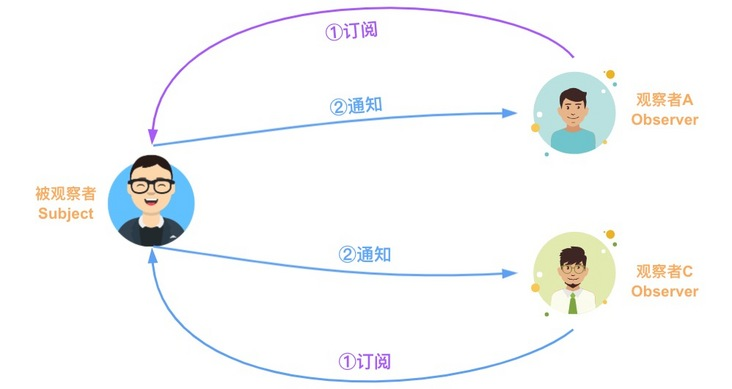
在上图中，Subject（主题）就是阿宝哥的 TS 专题文章，而观察者就是小秦和小王。由于观察者模式支持简单的广播通信，当消息更新时，会自动通知所有的观察者。
下面我们来看一下如何使用 TypeScript 来实现观察者模式。
# 5.1.1 实现代码
interface Observer { | |
notify: Function; | |
} | |
class ConcreteObserver implements Observer{ | |
constructor(private name: string) {} | |
notify() { | |
console.log(`${this.name} has been notified.`); | |
} | |
} | |
class Subject { | |
private observers: Observer[] = []; | |
public addObserver(observer: Observer): void { | |
console.log(observer, "is pushed!"); | |
this.observers.push(observer); | |
} | |
public deleteObserver(observer: Observer): void { | |
console.log("remove", observer); | |
const n: number = this.observers.indexOf(observer); | |
n != -1 && this.observers.splice(n, 1); | |
} | |
public notifyObservers(): void { | |
console.log("notify all the observers", this.observers); | |
this.observers.forEach(observer => observer.notify()); | |
} | |
} |
# 5.1.2 使用示例
const subject: Subject = new Subject(); | |
const xiaoQin = new ConcreteObserver("小秦"); | |
const xiaoWang = new ConcreteObserver("小王"); | |
subject.addObserver(xiaoQin); | |
subject.addObserver(xiaoWang); | |
subject.notifyObservers(); | |
subject.deleteObserver(xiaoQin); | |
subject.notifyObservers(); |
# 5.1.3 应用场景及案例
- 一个对象的行为依赖于另一个对象的状态。或者换一种说法，当被观察对象（目标对象）的状态发生改变时 ，会直接影响到观察对象的行为。
- RxJS Subject：https://github.com/ReactiveX/...
- RxJS Subject 文档：https://rxjs.dev/guide/subject
继续阅读：TypeScript 设计模式之观察者模式
# 5.2 发布订阅模式
在软件架构中，发布 / 订阅是一种消息范式，消息的发送者（称为发布者）不会将消息直接发送给特定的接收者（称为订阅者）。而是将发布的消息分为不同的类别，然后分别发送给不同的订阅者。 同样的，订阅者可以表达对一个或多个类别的兴趣，只接收感兴趣的消息，无需了解哪些发布者存在。
在发布订阅模式中有三个主要角色：Publisher（发布者）、 Channels（通道）和 Subscriber（订阅者）。
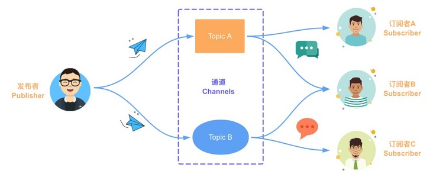
在上图中，Publisher（发布者）是阿宝哥，Channels（通道）中 Topic A 和 Topic B 分别对应于 TS 专题和 Deno 专题，而 Subscriber（订阅者）就是小秦、小王和小池。
下面我们来看一下如何使用 TypeScript 来实现发布订阅模式。
# 5.2.1 实现代码
type EventHandler = (...args: any[]) => any; | |
class EventEmitter { | |
private c = new Map<string, EventHandler[]>(); | |
// 订阅指定的主题 | |
subscribe(topic: string, ...handlers: EventHandler[]) { | |
let topics = this.c.get(topic); | |
if (!topics) { | |
this.c.set(topic, topics = []); | |
} | |
topics.push(...handlers); | |
} | |
// 取消订阅指定的主题 | |
unsubscribe(topic: string, handler?: EventHandler): boolean { | |
if (!handler) { | |
return this.c.delete(topic); | |
} | |
const topics = this.c.get(topic); | |
if (!topics) { | |
return false; | |
} | |
const index = topics.indexOf(handler); | |
if (index < 0) { | |
return false; | |
} | |
topics.splice(index, 1); | |
if (topics.length === 0) { | |
this.c.delete(topic); | |
} | |
return true; | |
} | |
// 为指定的主题发布消息 | |
publish(topic: string, ...args: any[]): any[] | null { | |
const topics = this.c.get(topic); | |
if (!topics) { | |
return null; | |
} | |
return topics.map(handler => { | |
try { | |
return handler(...args); | |
} catch (e) { | |
console.error(e); | |
return null; | |
} | |
}); | |
} | |
} |
# 5.2.2 使用示例
const eventEmitter = new EventEmitter(); | |
eventEmitter.subscribe("ts", (msg) => console.log(`收到订阅的消息：${msg}`) ); | |
eventEmitter.publish("ts", "TypeScript发布订阅模式"); | |
eventEmitter.unsubscribe("ts"); | |
eventEmitter.publish("ts", "TypeScript发布订阅模式"); |
# 5.2.3 应用场景
- 对象间存在一对多关系，一个对象的状态发生改变会影响其他对象。
- 作为事件总线，来实现不同组件间或模块间的通信。
- BetterScroll - EventEmitter：https://github.com/ustbhuangy...
- EventEmitter 在插件化架构的应用：https://mp.weixin.qq.com/s/N4...
继续阅读：如何优雅的实现消息通信？
# 六、策略模式
策略模式（Strategy Pattern）定义了一系列的算法，把它们一个个封装起来，并且使它们可以互相替换。策略模式的重心不是如何实现算法，而是如何组织、调用这些算法，从而让程序结构更灵活、可维护、可扩展。
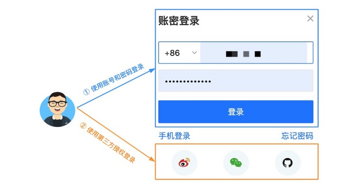
目前在一些主流的 Web 站点中，都提供了多种不同的登录方式。比如账号密码登录、手机验证码登录和第三方登录。为了方便维护不同的登录方式，我们可以把不同的登录方式封装成不同的登录策略。
下面我们来看一下如何使用策略模式来封装不同的登录方式。
# 6.1 实现代码
为了更好地理解以下代码，我们先来看一下对应的 UML 类图：
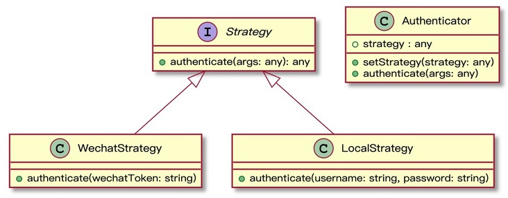
interface Strategy { | |
authenticate(...args: any): any; | |
} | |
class Authenticator { | |
strategy: any; | |
constructor() { | |
this.strategy = null; | |
} | |
setStrategy(strategy: any) { | |
this.strategy = strategy; | |
} | |
authenticate(...args: any) { | |
if (!this.strategy) { | |
console.log('尚未设置认证策略'); | |
return; | |
} | |
return this.strategy.authenticate(...args); | |
} | |
} | |
class WechatStrategy implements Strategy { | |
authenticate(wechatToken: string) { | |
if (wechatToken !== '123') { | |
console.log('无效的微信用户'); | |
return; | |
} | |
console.log('微信认证成功'); | |
} | |
} | |
class LocalStrategy implements Strategy { | |
authenticate(username: string, password: string) { | |
if (username !== 'abao' && password !== '123') { | |
console.log('账号或密码错误'); | |
return; | |
} | |
console.log('账号和密码认证成功'); | |
} | |
} |
# 6.2 使用示例
const auth = new Authenticator(); | |
auth.setStrategy(new WechatStrategy()); | |
auth.authenticate('123456'); | |
auth.setStrategy(new LocalStrategy()); | |
auth.authenticate('abao', '123'); |
# 6.3 应用场景及案例
- 一个系统需要动态地在几种算法中选择一种时，可将每个算法封装到策略类中。
- 多个类只区别在表现行为不同，可以使用策略模式，在运行时动态选择具体要执行的行为。
- 一个类定义了多种行为，并且这些行为在这个类的操作中以多个条件语句的形式出现，可将每个条件分支移入它们各自的策略类中以代替这些条件语句。
- Github - passport-local：https://github.com/jaredhanso...
- Github - passport-oauth2：https://github.com/jaredhanso...
- Github - zod：https://github.com/vriad/zod/...
# 七、职责链模式
职责链模式是使多个对象都有机会处理请求，从而避免请求的发送者和接受者之间的耦合关系。在职责链模式里，很多对象由每一个对象对其下家的引用而连接起来形成一条链。请求在这个链上传递，直到链上的某一个对象决定处理此请求。
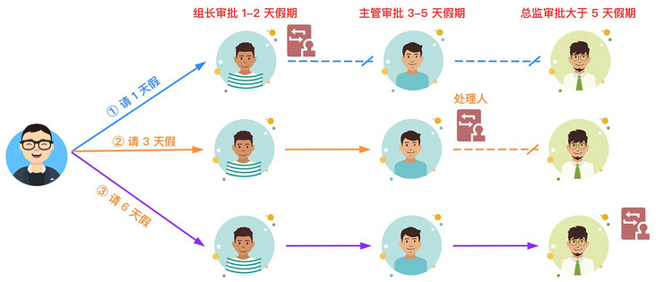
在公司中不同的岗位拥有不同的职责与权限。以上述的请假流程为例，当阿宝哥请 1 天假时，只要组长审批就可以了，不需要流转到主管和总监。如果职责链上的某个环节无法处理当前的请求，若含有下个环节，则会把请求转交给下个环节来处理。
在日常的软件开发过程中，对于职责链来说，一种常见的应用场景是中间件，下面我们来看一下如何利用职责链来处理请求。
# 7.1 实现代码
为了更好地理解以下代码，我们先来看一下对应的 UML 类图：
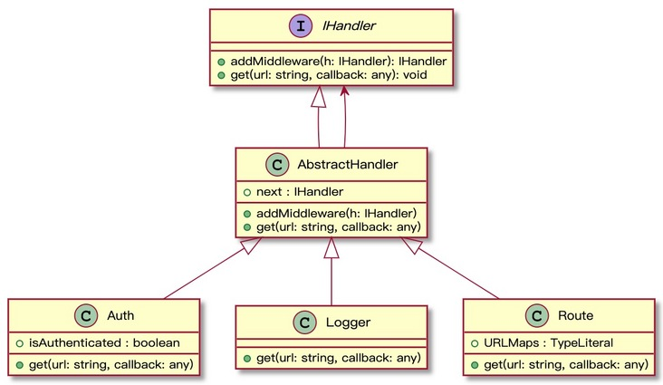
interface IHandler { | |
addMiddleware(h: IHandler): IHandler; | |
get(url: string, callback: (data: any) => void): void; | |
} | |
abstract class AbstractHandler implements IHandler { | |
next!: IHandler; | |
addMiddleware(h: IHandler) { | |
this.next = h; | |
return this.next; | |
} | |
get(url: string, callback: (data: any) => void) { | |
if (this.next) { | |
return this.next.get(url, callback); | |
} | |
} | |
} | |
// 定义 Auth 中间件 | |
class Auth extends AbstractHandler { | |
isAuthenticated: boolean; | |
constructor(username: string, password: string) { | |
super(); | |
this.isAuthenticated = false; | |
if (username === 'abao' && password === '123') { | |
this.isAuthenticated = true; | |
} | |
} | |
get(url: string, callback: (data: any) => void) { | |
if (this.isAuthenticated) { | |
return super.get(url, callback); | |
} else { | |
throw new Error('Not Authorized'); | |
} | |
} | |
} | |
// 定义 Logger 中间件 | |
class Logger extends AbstractHandler { | |
get(url: string, callback: (data: any) => void) { | |
console.log('/GET Request to: ', url); | |
return super.get(url, callback); | |
} | |
} | |
class Route extends AbstractHandler { | |
URLMaps: {[key: string]: any}; | |
constructor() { | |
super(); | |
this.URLMaps = { | |
'/api/todos': [{ title: 'learn ts' }, { title: 'learn react' }], | |
'/api/random': Math.random(), | |
}; | |
} | |
get(url: string, callback: (data: any) => void) { | |
super.get(url, callback); | |
if (this.URLMaps.hasOwnProperty(url)) { | |
callback(this.URLMaps[url]); | |
} | |
} | |
} |
# 7.2 使用示例
const route = new Route(); | |
route.addMiddleware(new Auth('abao', '123')).addMiddleware(new Logger()); | |
route.get('/api/todos', data => { | |
console.log(JSON.stringify({ data }, null, 2)); | |
}); | |
route.get('/api/random', data => { | |
console.log(data); | |
}); |
# 7.3 应用场景
- 可处理一个请求的对象集合应被动态指定。
- 想在不明确指定接收者的情况下，向多个对象中的一个提交一个请求。
- 有多个对象可以处理一个请求，哪个对象处理该请求运行时自动确定，客户端只需要把请求提交到链上即可。
# 八、模板方法模式
模板方法模式由两部分结构组成：抽象父类和具体的实现子类。通常在抽象父类中封装了子类的算法框架，也包括实现一些公共方法以及封装子类中所有方法的执行顺序。子类通过继承这个抽象类，也继承了整个算法结构，并且可以选择重写父类的方法。
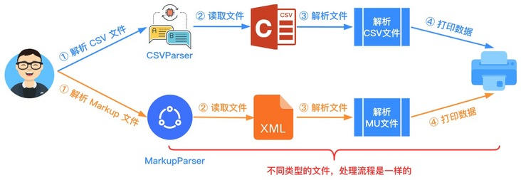
在上图中，阿宝哥通过使用不同的解析器来分别解析 CSV 和 Markup 文件。虽然解析的是不同的类型的文件，但文件的处理流程是一样的。这里主要包含读取文件、解析文件和打印数据三个步骤。针对这个场景，我们就可以引入模板方法来封装以上三个步骤的处理顺序。
下面我们来看一下如何使用模板方法来实现上述的解析流程。
# 8.1 实现代码
为了更好地理解以下代码，我们先来看一下对应的 UML 类图：
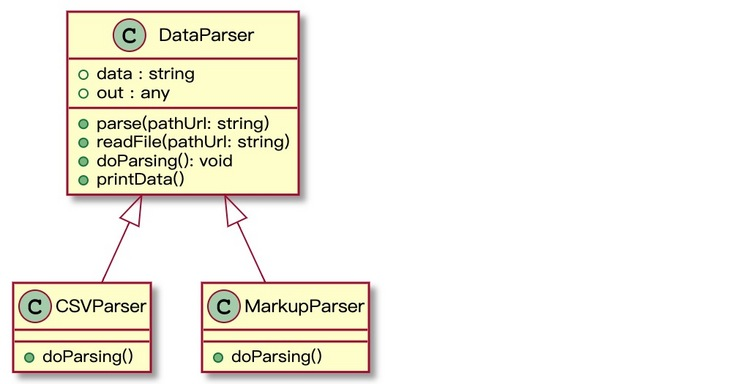
import fs from 'fs'; | |
abstract class DataParser { | |
data: string = ''; | |
out: any = null; | |
// 这就是所谓的模板方法 | |
parse(pathUrl: string) { | |
this.readFile(pathUrl); | |
this.doParsing(); | |
this.printData(); | |
} | |
readFile(pathUrl: string) { | |
this.data = fs.readFileSync(pathUrl, 'utf8'); | |
} | |
abstract doParsing(): void; | |
printData() { | |
console.log(this.out); | |
} | |
} | |
class CSVParser extends DataParser { | |
doParsing() { | |
this.out = this.data.split(','); | |
} | |
} | |
class MarkupParser extends DataParser { | |
doParsing() { | |
this.out = this.data.match(/<\w+>.*<\/\w+>/gim); | |
} | |
} |
# 8.2 使用示例
const csvPath = './data.csv'; | |
const mdPath = './design-pattern.md'; | |
new CSVParser().parse(csvPath); | |
new MarkupParser().parse(mdPath); |
# 8.3 应用场景
- 算法的整体步骤很固定，但其中个别部分易变时，这时候可以使用模板方法模式，将容易变的部分抽象出来，供子类实现。
- 当需要控制子类的扩展时，模板方法只在特定点调用钩子操作，这样就只允许在这些点进行扩展。